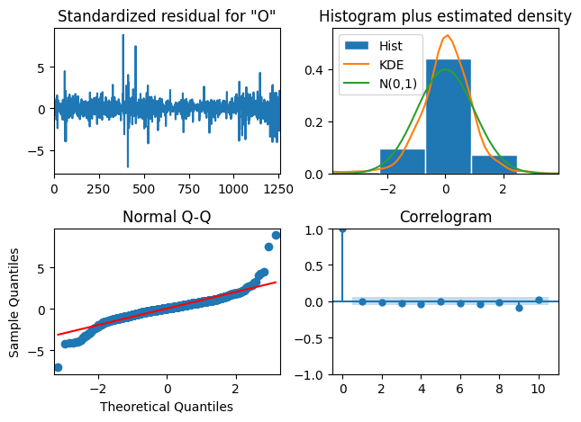

import pandas as pd
import numpy as np
import matplotlib.pyplot as plt
from statsmodels.tsa.arima.model import ARIMA
from statsmodels.tsa.statespace.sarimax import SARIMAX
from statsmodels.tsa.stattools import adfuller, kpssUntitled
# using the augmented dicky fuller test
def adfuller_test(series) :
result = adfuller(series)
print('ADF Statistic: %f' % result[0]) # the more negative this value is the more likely ts is stationary
print('p-value: %f' % result[1]) # if p-values is less than 0.05 we reject the null: ts is non-stationary
print('Critical Values:')
for key, value in result[4].items():
print('\t%s: %.3f' % (key, value))
print(f'Result: The series is {"not " if result[1] > 0.05 else ""}stationary')
def kpss_test(series, **kw):
statistic, p_value, n_lags, critical_values = kpss(series, **kw)
# Format Output
print(f'KPSS Statistic: {statistic}')
print(f'p-value: {p_value}')
print(f'num lags: {n_lags}')
print('Critial Values:')
for key, value in critical_values.items():
print(f' {key} : {value}')
print(f'Result: The series is {"not " if p_value < 0.05 else ""}stationary')Load the Data
gafa_stock = pd.read_csv('C:/Users/nickc/DataScience/NickAMC.github.io/DATA_624_S24/rdata/gafa_stock.csv', parse_dates=True, index_col = 'Date')google = gafa_stock.query('Symbol == "GOOG"')[['Open']]expected_range = pd.date_range(start = google.index.min(), end = google.index.max())
missing_dates = expected_range.difference(google.index)
if missing_dates.empty:
print("No missing dates found in the time series.")
else:
print("Missing dates:")
print(missing_dates)
print("Number of Missing Dates: ", len(missing_dates))Missing dates:
DatetimeIndex(['2014-01-04', '2014-01-05', '2014-01-11', '2014-01-12',
'2014-01-18', '2014-01-19', '2014-01-20', '2014-01-25',
'2014-01-26', '2014-02-01',
...
'2018-12-05', '2018-12-08', '2018-12-09', '2018-12-15',
'2018-12-16', '2018-12-22', '2018-12-23', '2018-12-25',
'2018-12-29', '2018-12-30'],
dtype='datetime64[ns]', length=567, freq=None)
Number of Missing Dates: 567google.plot()
plt.show()display(adfuller_test(google))
display(kpss_test(google))ADF Statistic: -0.642239
p-value: 0.861149
Critical Values:
1%: -3.436
5%: -2.864
10%: -2.568
Result: The series is not stationary
KPSS Statistic: 5.449810701097353
p-value: 0.01
num lags: 21
Critial Values:
10% : 0.347
5% : 0.463
2.5% : 0.574
1% : 0.739
Result: The series is not stationaryNoneC:\Users\nickc\AppData\Local\Temp\ipykernel_48852\2851492813.py:15: InterpolationWarning: The test statistic is outside of the range of p-values available in the
look-up table. The actual p-value is smaller than the p-value returned.
statistic, p_value, n_lags, critical_values = kpss(series, **kw)Nonegoogle_log = np.log(google)
google_log_diff = google_log.diff().dropna()
plt.plot(google_log_diff)
plt.show()print(adfuller_test(google_log_diff))
print(kpss_test(google_log_diff))ADF Statistic: -12.555178
p-value: 0.000000
Critical Values:
1%: -3.436
5%: -2.864
10%: -2.568
Result: The series is stationary
None
KPSS Statistic: 0.05074181530790068
p-value: 0.1
num lags: 9
Critial Values:
10% : 0.347
5% : 0.463
2.5% : 0.574
1% : 0.739
Result: The series is stationary
NoneC:\Users\nickc\AppData\Local\Temp\ipykernel_48852\2851492813.py:15: InterpolationWarning: The test statistic is outside of the range of p-values available in the
look-up table. The actual p-value is greater than the p-value returned.
statistic, p_value, n_lags, critical_values = kpss(series, **kw)FInd the Best Parameters for the ARIMA Models
order_aic_bic = []
for p in range(3) :
for q in range(3) :
model = ARIMA(google_log_diff, order = (p,1,q)) # we know 1 order of differencing is needed
results = model.fit()
order_aic_bic.append((p,q, results.aic, results.bic))
c:\Users\nickc\DataScience\ds_env\Lib\site-packages\statsmodels\tsa\base\tsa_model.py:473: ValueWarning: A date index has been provided, but it has no associated frequency information and so will be ignored when e.g. forecasting.
self._init_dates(dates, freq)
c:\Users\nickc\DataScience\ds_env\Lib\site-packages\statsmodels\tsa\base\tsa_model.py:473: ValueWarning: A date index has been provided, but it has no associated frequency information and so will be ignored when e.g. forecasting.
self._init_dates(dates, freq)
c:\Users\nickc\DataScience\ds_env\Lib\site-packages\statsmodels\tsa\base\tsa_model.py:473: ValueWarning: A date index has been provided, but it has no associated frequency information and so will be ignored when e.g. forecasting.
self._init_dates(dates, freq)
c:\Users\nickc\DataScience\ds_env\Lib\site-packages\statsmodels\tsa\base\tsa_model.py:473: ValueWarning: A date index has been provided, but it has no associated frequency information and so will be ignored when e.g. forecasting.
self._init_dates(dates, freq)
c:\Users\nickc\DataScience\ds_env\Lib\site-packages\statsmodels\tsa\base\tsa_model.py:473: ValueWarning: A date index has been provided, but it has no associated frequency information and so will be ignored when e.g. forecasting.
self._init_dates(dates, freq)
c:\Users\nickc\DataScience\ds_env\Lib\site-packages\statsmodels\base\model.py:607: ConvergenceWarning: Maximum Likelihood optimization failed to converge. Check mle_retvals
warnings.warn("Maximum Likelihood optimization failed to "
c:\Users\nickc\DataScience\ds_env\Lib\site-packages\statsmodels\tsa\base\tsa_model.py:473: ValueWarning: A date index has been provided, but it has no associated frequency information and so will be ignored when e.g. forecasting.
self._init_dates(dates, freq)
c:\Users\nickc\DataScience\ds_env\Lib\site-packages\statsmodels\tsa\base\tsa_model.py:473: ValueWarning: A date index has been provided, but it has no associated frequency information and so will be ignored when e.g. forecasting.
self._init_dates(dates, freq)
c:\Users\nickc\DataScience\ds_env\Lib\site-packages\statsmodels\tsa\base\tsa_model.py:473: ValueWarning: A date index has been provided, but it has no associated frequency information and so will be ignored when e.g. forecasting.
self._init_dates(dates, freq)
c:\Users\nickc\DataScience\ds_env\Lib\site-packages\statsmodels\base\model.py:607: ConvergenceWarning: Maximum Likelihood optimization failed to converge. Check mle_retvals
warnings.warn("Maximum Likelihood optimization failed to "
c:\Users\nickc\DataScience\ds_env\Lib\site-packages\statsmodels\tsa\base\tsa_model.py:473: ValueWarning: A date index has been provided, but it has no associated frequency information and so will be ignored when e.g. forecasting.
self._init_dates(dates, freq)
c:\Users\nickc\DataScience\ds_env\Lib\site-packages\statsmodels\base\model.py:607: ConvergenceWarning: Maximum Likelihood optimization failed to converge. Check mle_retvals
warnings.warn("Maximum Likelihood optimization failed to "# Construct DataFrame from order_aic_bic
order_df = pd.DataFrame(order_aic_bic,
columns=['p','q','AIC','BIC'])
# Print order_df in order of increasing AIC
print(order_df.sort_values('AIC'))
print('*********************************')
# Print order_df in order of increasing BIC
print(order_df.sort_values('BIC')) p q AIC BIC
4 1 1 -6869.548139 -6854.141077
2 0 2 -6869.263324 -6853.856262
7 2 1 -6867.780348 -6847.237599
8 2 2 -6865.552180 -6839.873743
1 0 1 -6863.592638 -6853.321263
5 1 2 -6861.327671 -6840.784922
6 2 0 -6524.990899 -6509.583836
3 1 0 -6348.681696 -6338.410321
0 0 0 -5905.336192 -5900.200505
*********************************
p q AIC BIC
4 1 1 -6869.548139 -6854.141077
2 0 2 -6869.263324 -6853.856262
1 0 1 -6863.592638 -6853.321263
7 2 1 -6867.780348 -6847.237599
5 1 2 -6861.327671 -6840.784922
8 2 2 -6865.552180 -6839.873743
6 2 0 -6524.990899 -6509.583836
3 1 0 -6348.681696 -6338.410321
0 0 0 -5905.336192 -5900.200505model = ARIMA(google_log, order = (1,1,1))
result = model.fit()
print(result.summary()) SARIMAX Results
==============================================================================
Dep. Variable: Open No. Observations: 1258
Model: ARIMA(1, 1, 1) Log Likelihood 3443.965
Date: Mon, 26 Feb 2024 AIC -6881.930
Time: 18:54:47 BIC -6866.520
Sample: 0 HQIC -6876.138
- 1258
Covariance Type: opg
==============================================================================
coef std err z P>|z| [0.025 0.975]
------------------------------------------------------------------------------
ar.L1 -0.1899 0.258 -0.735 0.462 -0.696 0.316
ma.L1 0.1116 0.259 0.431 0.666 -0.396 0.619
sigma2 0.0002 3.8e-06 64.219 0.000 0.000 0.000
===================================================================================
Ljung-Box (L1) (Q): 0.00 Jarque-Bera (JB): 6616.75
Prob(Q): 0.97 Prob(JB): 0.00
Heteroskedasticity (H): 0.96 Skew: 0.25
Prob(H) (two-sided): 0.69 Kurtosis: 14.23
===================================================================================
Warnings:
[1] Covariance matrix calculated using the outer product of gradients (complex-step).c:\Users\nickc\DataScience\ds_env\Lib\site-packages\statsmodels\tsa\base\tsa_model.py:473: ValueWarning: A date index has been provided, but it has no associated frequency information and so will be ignored when e.g. forecasting.
self._init_dates(dates, freq)
Residual Analysis
result.plot_diagnostics()
plt.tight_layout()
plt.show()
mae = np.mean(np.abs(result.resid))
print(f'MAE: {mae}')MAE: 0.01564654735555415AUTO ARIMA
from pmdarima import plot_acfimport pmdarima as pmresults = pm.auto_arima(google_log,
information_criterion='aic',
trace=True)Performing stepwise search to minimize aic
ARIMA(2,1,2)(0,0,0)[0] intercept : AIC=-6881.065, Time=0.56 sec
ARIMA(0,1,0)(0,0,0)[0] intercept : AIC=-6877.258, Time=0.10 sec
ARIMA(1,1,0)(0,0,0)[0] intercept : AIC=-6883.357, Time=0.17 sec
ARIMA(0,1,1)(0,0,0)[0] intercept : AIC=-6883.070, Time=0.14 sec
ARIMA(0,1,0)(0,0,0)[0] : AIC=-6877.931, Time=0.07 sec
ARIMA(2,1,0)(0,0,0)[0] intercept : AIC=-6881.575, Time=0.23 sec
ARIMA(1,1,1)(0,0,0)[0] intercept : AIC=-6881.471, Time=0.15 sec
ARIMA(2,1,1)(0,0,0)[0] intercept : AIC=-6879.609, Time=0.67 sec
ARIMA(1,1,0)(0,0,0)[0] : AIC=-6883.801, Time=0.07 sec
ARIMA(2,1,0)(0,0,0)[0] : AIC=-6882.060, Time=0.13 sec
ARIMA(1,1,1)(0,0,0)[0] : AIC=-6881.930, Time=0.12 sec
ARIMA(0,1,1)(0,0,0)[0] : AIC=-6883.505, Time=0.18 sec
ARIMA(2,1,1)(0,0,0)[0] : AIC=-6880.097, Time=0.19 sec
Best model: ARIMA(1,1,0)(0,0,0)[0]
Total fit time: 2.789 secondsresultsARIMA(1,1,0)(0,0,0)[0]In a Jupyter environment, please rerun this cell to show the HTML representation or trust the notebook.
On GitHub, the HTML representation is unable to render, please try loading this page with nbviewer.org.
ARIMA(1,1,0)(0,0,0)[0]
print(results.summary()) SARIMAX Results
==============================================================================
Dep. Variable: y No. Observations: 1258
Model: SARIMAX(1, 1, 0) Log Likelihood 3443.900
Date: Mon, 26 Feb 2024 AIC -6883.801
Time: 17:42:35 BIC -6873.528
Sample: 0 HQIC -6879.940
- 1258
Covariance Type: opg
==============================================================================
coef std err z P>|z| [0.025 0.975]
------------------------------------------------------------------------------
ar.L1 -0.0790 0.018 -4.428 0.000 -0.114 -0.044
sigma2 0.0002 3.78e-06 64.540 0.000 0.000 0.000
===================================================================================
Ljung-Box (L1) (Q): 0.00 Jarque-Bera (JB): 6639.57
Prob(Q): 1.00 Prob(JB): 0.00
Heteroskedasticity (H): 0.96 Skew: 0.24
Prob(H) (two-sided): 0.67 Kurtosis: 14.25
===================================================================================
Warnings:
[1] Covariance matrix calculated using the outer product of gradients (complex-step).results.plot_diagnostics()
plt.tight_layout()
plt.show()Forecasting
In Sample Forecasting
forecast = result.get_prediction(start =-45)
mean_forecast = forecast.predicted_mean
conf_int = forecast.conf_int()
lower_limits = conf_int.loc[:,'lower Open']
upper_limits = conf_int.loc[:,'upper Open']
plt.plot(google.index, google, label = 'Observed')
plt.plot(mean_forecast.index, np.exp(mean_forecast), color = 'red', label = 'Forecast')
plt.fill_between(lower_limits.index, np.exp(lower_limits), np.exp(upper_limits), color = 'pink')
plt.xlabel('Date')
plt.ylabel('Google Stock Price - Open USD')
plt.legend()
plt.show()Dynamic Forecasting
forecast = result.get_prediction(start =-90, dynamic = True)
mean_forecast = forecast.predicted_mean
conf_int = forecast.conf_int()
lower_limits = conf_int.loc[:,'lower Open']
upper_limits = conf_int.loc[:,'upper Open']
plt.plot(google.index, google, label = 'Observed')
plt.plot(mean_forecast.index, np.exp(mean_forecast), color = 'red', label = 'Forecast')
plt.fill_between(lower_limits.index, np.exp(lower_limits), np.exp(upper_limits), color = 'pink')
plt.xlabel('Date')
plt.ylabel('Google Stock Price - Open USD')
plt.legend()
plt.show()Out Sample Forecasting
arima_value_forecasting = results.predict(60)c:\Users\nickc\DataScience\ds_env\Lib\site-packages\statsmodels\tsa\base\tsa_model.py:836: ValueWarning:
No supported index is available. Prediction results will be given with an integer index beginning at `start`.
c:\Users\nickc\DataScience\ds_env\Lib\site-packages\statsmodels\tsa\base\tsa_model.py:836: FutureWarning:
No supported index is available. In the next version, calling this method in a model without a supported index will result in an exception.
np.exp(arima_value_forecasting)1258 1050.854003
1259 1050.862376
1260 1050.861714
1261 1050.861767
1262 1050.861762
1263 1050.861763
1264 1050.861763
1265 1050.861763
1266 1050.861763
1267 1050.861763
1268 1050.861763
1269 1050.861763
1270 1050.861763
1271 1050.861763
1272 1050.861763
1273 1050.861763
1274 1050.861763
1275 1050.861763
1276 1050.861763
1277 1050.861763
1278 1050.861763
1279 1050.861763
1280 1050.861763
1281 1050.861763
1282 1050.861763
1283 1050.861763
1284 1050.861763
1285 1050.861763
1286 1050.861763
1287 1050.861763
1288 1050.861763
1289 1050.861763
1290 1050.861763
1291 1050.861763
1292 1050.861763
1293 1050.861763
1294 1050.861763
1295 1050.861763
1296 1050.861763
1297 1050.861763
1298 1050.861763
1299 1050.861763
1300 1050.861763
1301 1050.861763
1302 1050.861763
1303 1050.861763
1304 1050.861763
1305 1050.861763
1306 1050.861763
1307 1050.861763
1308 1050.861763
1309 1050.861763
1310 1050.861763
1311 1050.861763
1312 1050.861763
1313 1050.861763
1314 1050.861763
1315 1050.861763
1316 1050.861763
1317 1050.861763
dtype: float64plt.plot(google.index, google, label = 'Observed')
plt.plot(arima_value_forecasting.index, np.exp(arima_value_forecasting), color = 'red', label = 'Forecast')
plt.fill_between(lower_limits.index, np.exp(lower_limits), np.exp(upper_limits), color = 'pink')
plt.xlabel('Date')
plt.ylabel('Google Stock Price - Open USD')
plt.legend()
plt.show()